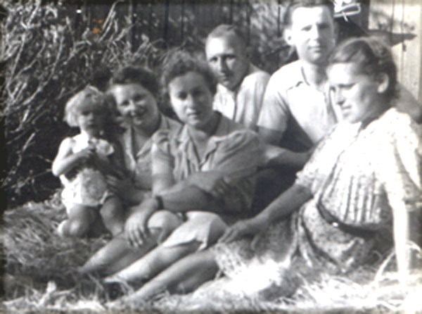
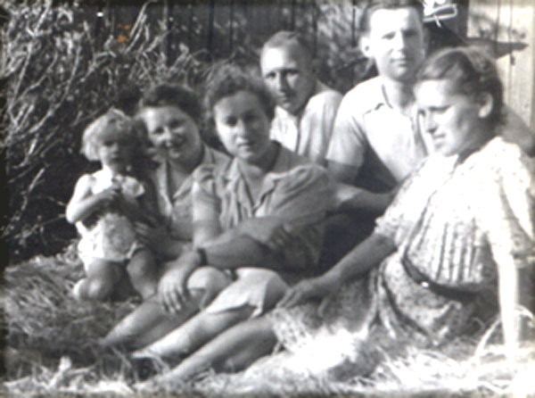

Janina i Gustaw Czechowie

Gustaw Czech
Jan Czech
Maria Janina urodziła się w 1908 roku w Krakowie. 8 lutego 1942 roku poślubiła Gustawa Czecha, lat 40, syna Grzegorza i Wiktorii z Kulkowskich. . wyszła za mąż za Gustawa Czecha. Był on pracownikiem bankowym. Młodzi zamieszkali początkowo w mało komfortowym mieszkaniu przy ul. Garbarskiej 16. Wkrótce Gustaw otrzymał od banku mieszkanie służbowe przy ul. Tomasza.
Maria Janina zmarła 3 marca 1972 roku w Krakowie..
Czechowie mieli dwoje dzieci: Ewę i Jana.
 
 Ewa Czechówna
Ewa urodziła się w 1945 roku. W 1971 wyszła za mąż za lekarza Witolda Czechowicza. Nie mieli dzieci. Rozwiedziona. Mieszka w Krakowie.
Jan Czech urodził w 1947 roku w Krakowie.